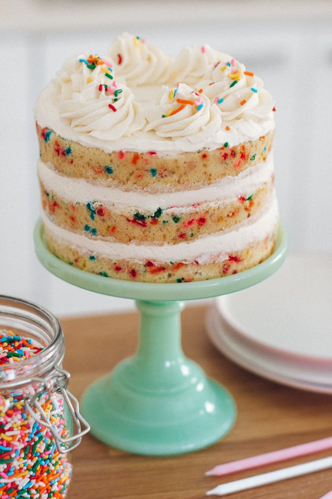

THE FUNFETTI CAKE
The funfetti cake is perfect for a party,this rainbow -speckled cake screams 'celebrate' Pipe Creamy butterscream and jam-filled sponge is sure to be a crowd-pleaser, great for a birthday party.
The recipe below serves 5 people and it takes abot 45 minutes to make
Ingredients used are:
- 300g golden caster sugar
- 450g butter softened
- 1 tbsp vanilla bean paste
- 8 eggs beaten
- 450g self-raising flour
- 1 tsp baking powder
- 4 tbsp whole milk
- 200g rainbow sprinkles, plus extra to decorate
Method for making the cake are:
- Preheat the oven to 180C/160 fan/ gas 4 and grease and line 4 x 20cm cake tins. If you don’t have 4, halve the sponge recipe and bake in 2 batches.
- Put the sugar, butter and vanilla paste in a large bowl and beat with an electric whisk (or in a table top mixer) until pale and fluffy. Add the eggs gradually, beating between each addition until fully incorporated. Add a tbsp or 2 of flour if the mixture looks like it’s curdling.
- Sift in the flour and baking powder with a tsp of salt and fold into the cake batter. Pour in the milk and beat to loosen the mixture. Scatter over the sprinkles and ripple through the cake batter before dividing between each cake tin. Bake for 25-30 mins until golden and the sponge springs back when you press it lightly. Swap the tins around in the oven after 15 mins to ensure they cook evenly. Cool on wire racks completely before icing
- Meanwhile, make the icing by beating the butter with half of the icing sugar until combined and fluffy. Add the cream cheese and the rest of the icing sugar, beating again until fully combined. Drizzle over the vanilla paste and beat until incorporated. Put a large round nozzle into a piping bag and spoon in the icing.
- When the cakes have cooled put a blob of icing onto a cake board and sit 1 of the sponges on top. Pipe blobs of vanilla icing in a circle covering the whole base of the sponge, then top with the next sponge. Repeat with all 3 layers, scattering over some extra sprinkles on the top. Serve in slices.

| Type |
Nutritional value |
| Carbohydrate |
50 |
| Protein |
75 |
| Sugar |
100 |